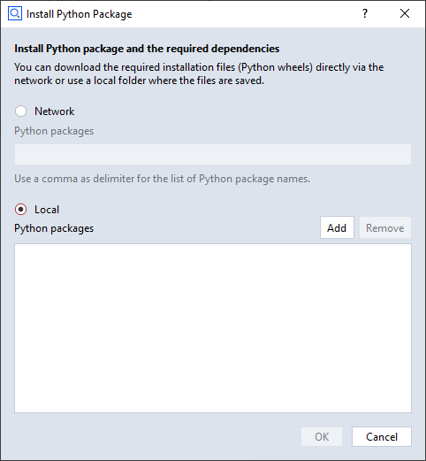
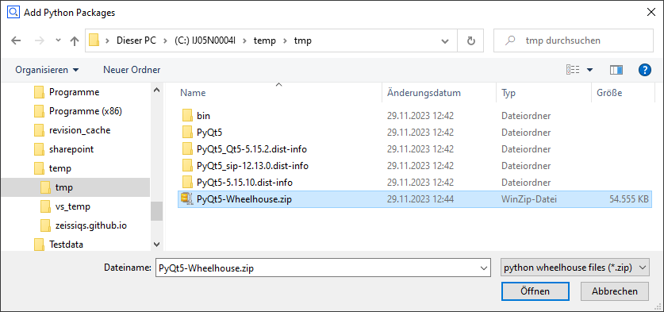

Using Python wheelhouses
Abstract: Usually installing Python packages via the Add-on Explorer in the Add-on Editor works just fine. In certain cases, the installation succeeds but the Add-on will fail with the error message
The specified module could not be found.This could be caused by inter-wheel dependencies or by hardcoded paths in packages, which are different from the ones used by the ZEISS INSPECT software. This is solved by creating a Python wheelhouse, which is installed in the same way as a normal Python wheel. Technically, a wheelhouse is a ZIP archive of Python wheels.
Creating a wheelhouse
PyQt5 is used as a real-world example here.
Install all required Python wheels into a temporary folder
python -m pip install PyQt5 --target=tmp --upgrade
Create a ZIP archive of all files below the temporary folder
E.g. using 7-Zip
cd tmp
"C:\Program Files\7-Zip\7z.exe" a PyQt5-Wheelhouse.zip *
Caution
ZEISS INSPECT uses a wheel cache, which relies on the file names for proper operation. If you are dealing with different versions of a wheelhouse, make sure that the created files have distinct names.
Install the wheelhouse using the Add-on Explorer


Note
For some reason, PyQt5.sip (a Python wheel required by PyQt5) could not be used from the Python wheelhouse, but had to be installed additionally using the Add-on Explorer.